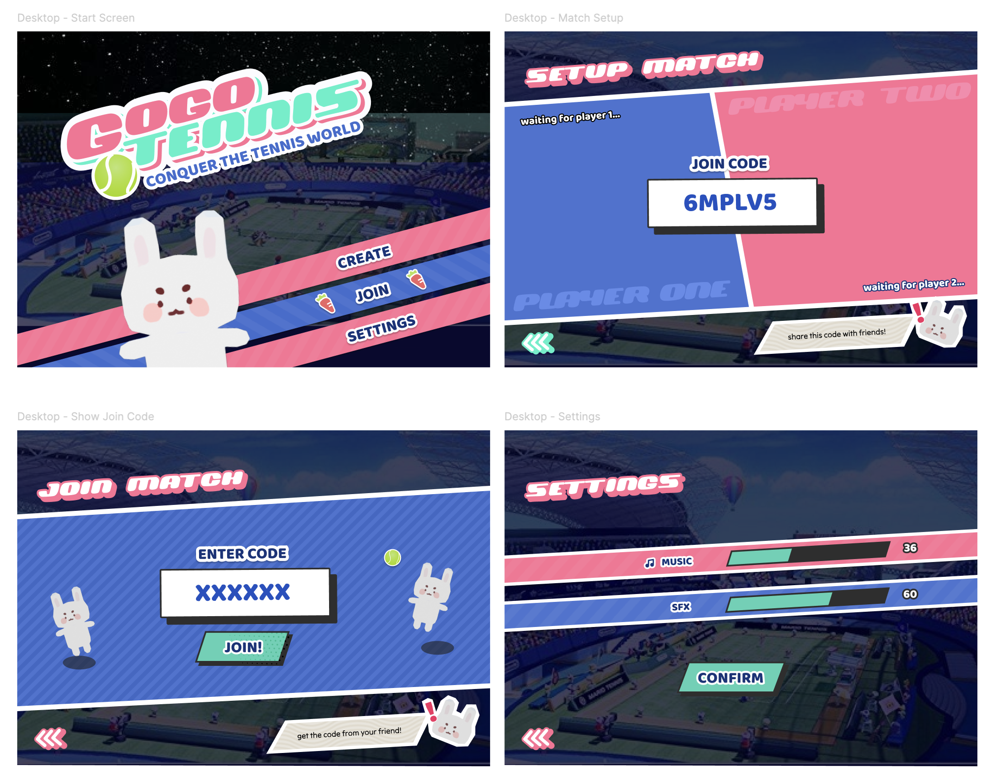

From Prototype to Production
After finishing V1, I still felt there was more I wanted to explore with the project. V1 proved that we could connect two players, use their phones as tennis rackets, and have them play a real multiplayer tennis match. However, because the project was built as a prototype in a short amount of time, many aspects beyond the core gameplay were not fully considered.
This inspired me to continue the project with V2 and address the gaps that became apparent during development. The goal is to explore how the project could be restructured for a more production oriented environment while also refining the game's visual and player experience to a more polished level.
V2 is currently in development, so this page focuses more of the key architecture rewrites and visual decisions for the new iteration.
This redesign is focused on these key areas:
Visual Concept + UI
We wanted to introduce a new visual direction for the playable characters and overall game presentation. Our previous concept combined an arctic cyber aesthetic with animal characters, but we had a hard time making the two ideas feel connected. For V2, we wanted the characters and world to come from the same concept, creating a more consistent visual identity.
The new direction centers around a cosmic world where tennis has become a way to settle conflicts between factions. The playable characters are imagined as rabbit siblings competing for to win, with their story connected to a larger universe of warring factions. This gives the characters a place within the world while also making tennis part of the game's identity.
Visually, the game keeps the neon cyber aesthetic from the original concept while shifting it toward a more cohesive cosmic setting. These designs are still in development, but they establish the direction for the game's next iteration. Moving beyond the prototype also means reconsidering the UI, which was originally built to support development rather than a final player experience. I hope V2 explores a cleaner interface, clearer feedback, and a more consistent visual language across the lobby and gameplay.


Architectural Improvements
The original prototype was built in a short amount of time, so some of the systems became closely tied together. For V2, I want to restructure the code by separating responsibilities such as phone input, racket control, networking, ball physics, match state, and scoring. The goal is to make these systems more modular so they can be changed or expanded without requiring changes across the rest of the codebase.
Have questions or comments? Let's talk!